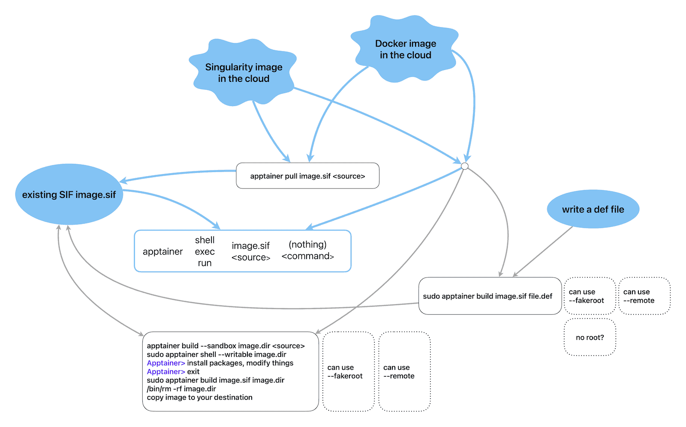

Creating and running container images

Blue lines show workflows without modifying a container, whereas grey-line workflows modify system files in your container and typically require root, although there are non-root workarounds in dotted boxes.
Running existing containers without modification
Let’s run the “Lolcow” container by Apptainer developers:
mkdir tmp && cd tmp
module load apptainer
salloc --time=2:0:0 --mem-per-cpu=3600 # very important!!!
apptainer pull hello-world.sif shub://vsoch/hello-world # store it as hello-world.sif
ls -l
apptainer run hello-world.sif # run its default scriptWhere is this script? What did running the container actually do to result in the displayed output?
apptainer inspect -r hello-world.sif # it runs the script /rawr.sh
apptainer exec hello-world.sif cat /rawr.sh # here is what's insideapptainer run image.sifruns the container’s default scriptapptainer exec image.sif <command>runs a single command
We can also run an image directly off the Singularity Hub without putting it into the current directory:
rm hello-world.sif # clear old image
apptainer run shub://vsoch/hello-world # use the cached image Similarly, we can run a Docker container directly off Docker Hub. However, it will first convert a Docker image into an Apptainer image, and then run this Apptainer image:
apptainer run docker://godlovedc/lolcow # random cow messageTry running this command again, and it’ll use the cached SIF image!
Let’s try something more basic:
apptainer run docker://ubuntu # wait for it build the container;
# at the end press Ctrl-D to exitWhat happened here in the last example? Well, there was no default script, so it presented the container shell to type commands. You can exit the container with Ctrl-D or exit. The end result is the same as if we typed apptainer shell docker://ubuntu which opens an interactive shell inside the container.
Let’s save the Ubuntu container to disk:
apptainer pull ubuntu.sif docker://ubuntuapptainer shell image.sifopens an interactive shell inside the container
On a Linux system the file /etc/os-release shows the current Linus distribution and version. Which OS are we running on the host, and which Ubuntu version is inside the container? Find the answer in 2 ways:
- with
apptainer runorapptainer shell(which produce the same result without a default script) - with
apptainer exec
Apptainer’s image cache
In the last two examples we did not store SIF images in the current directory. Where were they stored?
apptainer cache list # count cached images
apptainer cache list -v # show details with all the blobs
apptainer cache clean # clean all; will ask to confirm
apptainer cache clean --help # more granular controlBy default, Apptainer cache is stored in $HOME/.apptainer/cache. We can control the cache location with APPTAINER_CACHE environment variable.
APPTAINER* variables
Are there any APPTAINER* variables in our setup? What do you think they do?
Inspecting image metadata
apptainer inspect /path/to/SIF/file # some general build information
apptainer inspect -r /path/to/SIF/file # short for --runscript
apptainer inspect -d /path/to/SIF/file # short for --deffileCan you find other inspection flags besides -r and -d?
Modifying the containers
Build command
The apptainer build <imagePath> <buildSpec> command is a versatile tool that lets you:
- download and assemble existing containers from external hubs like Docker Hub (
docker://), Singularity Hub (shub://), and the Container Library (library://- no longer supported by default), - create a container from scratch using an Apptainer definition file customized to your needs,
- convert containers between different formats supported by Apptainer, e.g. create a container from a sandbox.
apptainer build --help- Build a Container page in the Apptainer documentation
In most cases, you would download an existing Docker/Apptainer container image and build/run a container from it, without having to modify the image. Or maybe, the image is already provided by your lab, a research collaborator, or the Alliance. For example, in the Alliance there have been some discussions to provide a set of Apptainer images with GPU development tools for different GPU architectures, such as NVIDIA’s CUDA and AMD’s ROCm, as it is often difficult to compile these from source. If you would like these or other custom pre-configured images, please reach out to the Alliance to request them.
In most cases apptainer build ... will need root access, so for simple downloading of an online image as a regular user you might prefer apptainer pull ... command.
Build consideration #1: modifying system files inside the container (root vs. regular user)
In some cases, you might want to modify the image or build your own container image from scratch. To create a container image, you need a machine that:
- runs Linux,
- has Apptainer installed,
- has Internet access, and
- ideally where you have
root(orsudo) permissions, otherwise all permissions inside the container will be messed up, and you won’t haverootorsudoaccess ➜ you won’t be able to install or upgrade packages (this requiresroot).
It is possible to install packages and modify system (root-owned) files inside the container without being root, either:
- by using
--fakerootto modify system files inside the container as if you were root (covered in this section; this option might be prone to errors, depending on the complexity of your container), or - by using a
--remotebuild option (covered in this section).
If installing packages is not important to you, i.e. you are planning to use the container as is for production purposes, you can probably create an image on an HPC cluster. If you run into problems, please ask for help at support@tech.alliancecan.ca.
In Apptainer the user always remains the same inside and outside of the container. In other words, if you enter a container without root privileges, you won’t be able to obtain root privileges within the container.
If you have access to your own Linux computer, it is best to build your images there (root access and performance from a local drive). Alternatively, you can use a VM where you have root access. In the Alliance, we provide free cloud projects to researchers for spinning up VMs.
Build consideration #2: host’s filesystem limitations
Another limitation to keep in mind is the type and bandwitdth of the host’s filesystem in which you are building the container. Parallel filesystems such as Lustre and GPFS (used on our clusters for /home, /scratch, /project) have some limitations that might lead to errors when creating a container – for technical details of some of the issues see this page.
In addition, building containers involves a large number of small file operations slowing down parallel filesystems which were not optimized for this type of I/O. For this reason, when building containers on our clusters, we highly recommend doing this inside a Slurm job in $SLURM_TMPDIR (SSD on a compute node).
Demo: building a development container in a sandbox as root
You need to be root in this section. For this reason, in this section I will run a demo on a machine with root access, and you can simply watch.
- Pull an existing Docker image from Docker Hub.
- Create a modifiable sandbox directory into which you can install packages.
- Add packages and perhaps your application and data.
- Convert the sandbox into a regular SIF image.
By default, Apptainer containers are read-only, i.e. while you can write into bind-mounted directories, normally you cannot modify files inside the container.
To build a writable container into which you can install packages, you need root access. The --sandbox flag below builds a sandbox to which changes can be made, and the --writable flag launches a read-write container. In this example ubuntu.dir is a directory on the host filesystem.
I will log in as user centos (with sudo privileges) to the training cluster and run apptainer with the full path (as apptainer from CVMFS will not be accessible to sudo):
ssh centos@apptainer
mkdir -p tmp && cd tmp
alias apptainer=/cvmfs/soft.computecanada.ca/easybuild/software/2023/x86-64-v3/Core/apptainer/1.3.5/bin/apptainer
alias sudo='sudo ' # so that the command after sudo is checked for alias
apptainer build --sandbox ubuntu.dir docker://ubuntu # sudo not yet required
du -sh ubuntu.dir # 82M, before installing packages
sudo apptainer shell --writable ubuntu.dir # start the sandbox in writable mode;
# sudo needed to install packages as root
Apptainer> apt-get update # update the package index files
Apptainer> wget # not available
Apptainer> whoami # I am root, so can install software system-wide
Apptainer> apt-get -y install wget # will fail here if Apptainer run without root
sudo du -sh ubuntu.dir # 139M; sudo necessary to scan root directoriesAbove you might see a warning when running ... apptainer shell --writable ...
WARNING: Skipping mount /etc/localtime [binds]: /etc/localtime doesn't exist in containeroccurs when you try to mount a file/directory into the container without that destination already inside the container. You can simply ignore this message. We will learn bind-mounting in the next section.
To convert the sandbox to a regular non-writable SIF container image, I will use:
sudo apptainer build ubuntu.sif ubuntu.dir
sudo rm -rf ubuntu.dir
ls -lh ubuntu.sif # 68M (compressed)
apptainer shell ubuntu.sif # can now start it as non-root
Apptainer> wget
Apptainer> ...
scp ubuntu.sif user01@apptainer.vastcloud.org:/project/def-sponsor00/sharedAs a regular user on the training cluster, I should be able to use this image now:
chmod -R og+rX /project/def-sponsor00/shared # give read access to all users
module load apptainer
apptainer shell /project/def-sponsor00/shared/ubuntu.sifFakeroot in a sandbox: no need for root!
You need an Apptainer 1.1 or later in this section, as well as fakeroot-sysv utility on the host preceding fakeroot in the path. Our CVMFS modules have been patched to include this utility inside the module’s private bindir, and on standalone Linux systems fakeroot-sysv is typically installed when you install the Apptainer package. This is to say that the approach outlined in this section most likely works both on our production clusters and on most standalone Linux systems with Apptainer 1.1 (or higher). However, it is always preferable to modify system files in the containers as root, and with --fakeroot you might still run into problems with more complex Apptainer images, so always monitor your output for errors.
We will follow the same recipe:
- Pull an existing Docker image from Docker Hub.
- Create a modifiable sandbox directory into which you can install packages.
- Add packages and perhaps your application and data.
- Convert the sandbox into a regular SIF image.
However, this time we will start the sandbox shell with the --fakeroot flag that will let us write system files inside the container as a regular (non-root) user. As a reminder, we need the sandbox to be able to modify files inside the container, i.e. we cannot do this inside an immutable SIF image.
mkdir -p tmp && cd tmp
module load apptainer
salloc --time=2:0:0 --mem-per-cpu=3600
apptainer build --sandbox ubuntu.dir docker://ubuntu # create the sandbox in ubuntu.dir/
du -sh ubuntu.dir # 82M, before installing packages
apptainer shell --fakeroot --writable ubuntu.dir/project
At this point you might see the following output:
INFO: User not listed in /etc/subuid, trying root-mapped namespace
INFO: Using fakeroot command combined with root-mapped namespace
WARNING: Skipping mount /etc/localtime [binds]: /etc/localtime doesn't exist in container
WARNING: By using --writable, Apptainer can't create /project destination automatically without overlay or underlay
FATAL: container creation failed: mount hook function failure: mount /project->/project error: while mounting /project: destination /project doesn't exist in containerHow would you solve this?
Next, inside the container, we can install the software we need, e.g.
Apptainer> apt-get update
Apptainer> apt-get -y install wget
du -sh ubuntu.dir # 140MTo convert the sandbox to a regular non-writable SIF container image, use
apptainer build ubuntu.sif ubuntu.dir
rm -rf ubuntu.dir
apptainer shell ubuntu.sif
Apptainer> wget
Apptainer> ...Building a container from a definition file: root or not
Depending on your Apptainer installation, you may or may not need to be root in this section. Try to follow along, if you want, or alternatively simply watch this demo.
Inside your working directory, create a new file python.def:
cd ~/tmp
nano python.defBootstrap: docker
From: ubuntu:24.04
%post
apt-get -y update && apt-get install -y python3
%runscript
python3 -c 'print("Hello World! Hello from our custom Apptainer image!")'We will bootstrap our image from a minimal Ubuntu 24.04 Linux Docker image as then run it as a regular user:
unset APPTAINER_BIND
apptainer build python.sif python.def # in Apptainer 1.0 important to run this as root; it can
# run without sudo but will use /etc/subuid mappings;
# running this as regular user will result in errors;
# in properly configured Apptainer 1.1 and higher can run
# this as regular user
ls -l python.sif # 80M
apptainer run python.sif # Hello World! Hello from our custom Apptainer image!More advanced definition files may have these sections:
%setup - commands in this section are first executed on the host system outside of the container
%files - copy files into the container with greater safety
%environment - define environment variables that will be set at runtime
%startscript - executed when the `instance start` command is issued
%test - runs at the very end of the build process to validate the container using a method of your choice
%labels - add metadata to `/.apptainer.d/labels.json` within your container
%help - this text can then be displayed with `apptainer run-help ...` in the hostas described in the user guide.
Apptainer definition files are used to define the build process and configuration for an image.
At this point, how do we install additional packages into this new container? There are several (three?) options.
Remote builder: no need for root!
If you have access to a platform with Apptainer installed but you don’t have root access to create containers, you may be able to use the Remote Builder functionality to offload the process of building an image to remote cloud resources. One popular cloud service for this is the Remote Builder from SyLabs, the developers of Apptainer. If you want to use their service, you will need to register for a cloud token via the link on the their page. Here is one possible workflow:
- Log in at https://cloud.sylabs.io/builder (can sign in with an existing GitHub account).
- Generate an access token at https://cloud.sylabs.io/auth/tokens and copy it into your clipboard.
- On the training cluster create a new local file
test.def:
Bootstrap: docker
From: ubuntu:24.04
%post
apt-get -y update && apt-get install -y python3
%runscript
python3 -c 'print("Hello World! Hello from our custom Apptainer image!")'- Build the image remotely and then run it locally:
module load apptainer
apptainer remote login # enter the token
apptainer remote status # check that you are able to connect to the services
apptainer build --remote test.sif test.def
ls -l test.sif # 62M
apptainer run test.sif # Hello World! Hello from our custom Apptainer image!You can find more information on remote endpoints in the official documentation.
Running more useful Docker images via Apptainer as regular user
Demo: running client-server ParaView from a container
You can pull a Docker image from Docker Hub and convert it to an Apptainer image. For this you typically do not need sudo access. Please build containers only on compute nodes, as this process is CPU-intensive.
The following commands require online access and will work only on Cedar (and the training cluster!) where compute nodes can access Internet. Let’s search Docker Hub for “topologytoolkit”. Click on the result and then on Tags – you should see the suggested Docker command “docker pull topologytoolkit/ttk-dev:5.11.0”. From Apptainer, the address will be “docker://topologytoolkit/ttk-dev:5.11.0”.
cd ~/tmp
module load apptainer
salloc --cpus-per-task=1 --time=0:30:0 --mem-per-cpu=3600
apptainer pull topologytoolkit.sif docker://topologytoolkit/ttk-dev:5.11.0On other production clusters – such as Béluga, Narval or Graham – compute nodes do not have Internet access, so you will have to use the two-step approach there:
cd ~/scratch
wget https://raw.githubusercontent.com/moby/moby/master/contrib/download-frozen-image-v2.sh
sh download-frozen-image-v2.sh build ttk:latest # download an image
# from Docker Hub into build/
cd build && tar cvf ../ttk.tar * && cd ..
module load apptainer
salloc --cpus-per-task=1 --time=0:30:0 --mem-per-cpu=3600 --account=...
apptainer build topologytoolkit.sif docker-archive://ttk.tar # build the Apptainer image;
# wait for `Build complete`
/bin/rm -rf build topologytoolkit.tarLet’s use this image! While still inside the job (on a compute node):
unzip /project/def-sponsor00/shared/paraview.zip data/sineEnvelope.nc # unpack some sample data
apptainer exec -B /home topologytoolkit.sif pvserverIf successful, it should say something like “Accepting connection(s): node1.int.apptainer.vastcloud.org:11111” – write down the node and the port names as you will need them in the next step.
On your laptop, set up SSH port forwarding to this compute node and port:
ssh username@apptainer.vastcloud.org -L 11111:node1:11111Next, start ParaView 5.11.x on your computer and connect to localhost:11111, and then load the dataset and visualize it.
Let’s try creating an image with another Linux distribution:
apptainer pull debian.sif docker://debian:latestTry running nano text editor inside one of these containers. If it is not installed, install it yourself: create a writable sandbox directory, enter it with --fakeroot --writable, install nano (google the commands), convert it back to SIF.
Pull the latest Python image from Docker Hub into an Apptainer image. It should take few minutes to build it.
1. How large is the resulting image?
1. Run container’s Python with the apptainer exec command. Which version of Python did it install?
1. Do some math, e.g. print \(\pi\).
1. When you exit Python, you will be back to your host system’s shell.
1. Now try running Python via the apptainer shell command.
1. Which operating system does this container run?
module load apptainer
salloc --cpus-per-task=1 --time=2:00:0 --mem-per-cpu=3600
apptainer pull python.sif docker://???Pull a recent CPU-based PyTorch image from Docker Hub into an Apptainer image.
module load apptainer
salloc --cpus-per-task=1 --time=2:00:0 --mem-per-cpu=3600
apptainer pull pytorch.sif docker://???- Which operating system does this container run?
- Try running some basic PyTorch commands inside this image:
import torch
A = torch.tensor([[2., 3., -1.], [1., -2., 8.], [6., 1., -3.]])
print(A)
b = torch.tensor([5., 21., -1.])
print(b)
x = torch.linalg.solve(A, b)
print(x)
torch.allclose(A @ x, b) # verify the resultFor more info on working with PyTorch tensors watch our webinar.
On our clusters we have PyTorch installed natively, both for CPUs and GPUs, so no need to rely on a container for this.